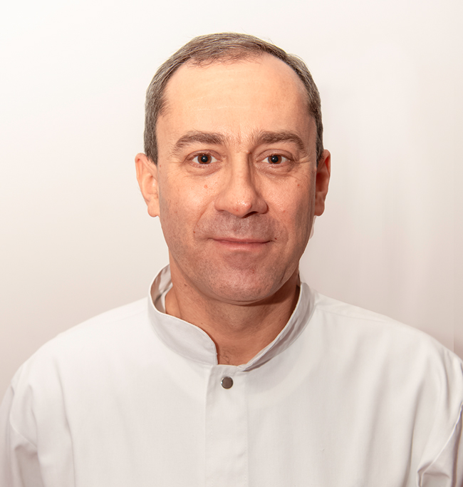
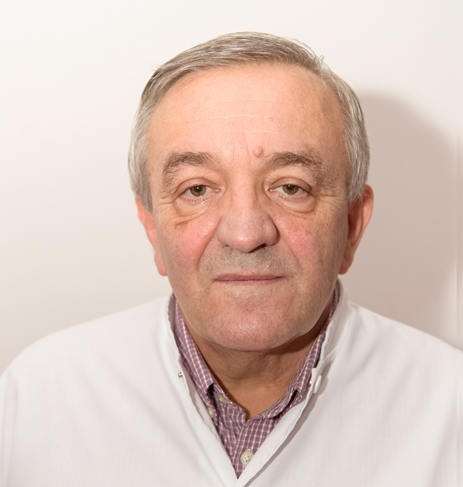
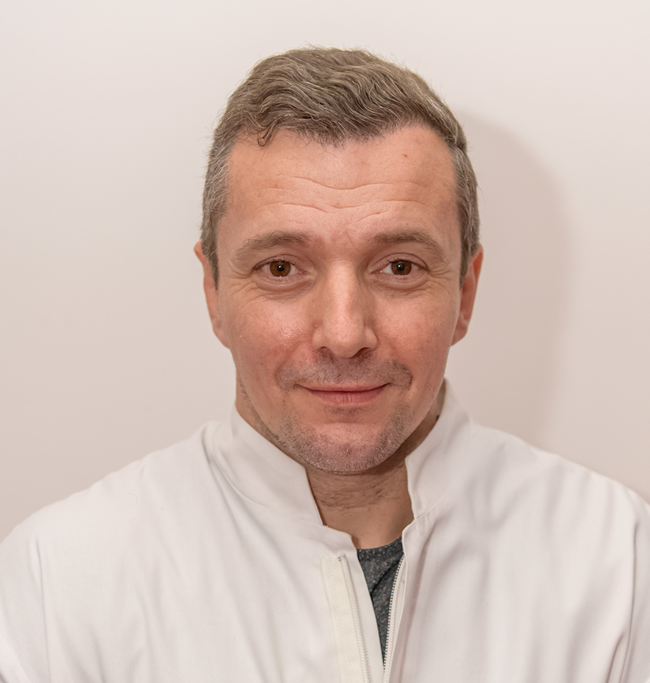

Spitalul Judetean de urgenta Bistrita
Sectia Cardiologie
B-dul General Grigore Bălan, nr. 43, Etaj III
Telefon: 0263 214 390/1 interior 174
Echipa medicala

Dr. Hărăguș Mihai Alexandru
Medic Primar Cardiolog

Dr. Cocoi Ioan Dănuț
Medic Primar Cardiolog
Dr. Meșter Petru Beniamin
Medic Specialist Cardiolog

Dr. Păștean Sorin Titus
Medic Specialist Cardiolog
Dotare
55 paturi din care compartiment terapie intensiva coronariei 6 paturi
defibrilator (PRIMEDIC)
aspirator secretii (FAZZINI)
injectomate (HITECHS PRO SP-12S — Lithuania, PILOT A2)
monitoare EKG monitor puls, SatO2, TA. (NIHON KOHDEN, SPACELABS)
electrocardiograf (BTL 08 LT)
ecograf (ESAOTE AU5 HARMONIC)
Servicii medicale
Dotare Servicii medicale consultatii medicale de specialitate — cazuri acute
consultatii medicale de specialitate — cazuri cronice
consultatii de specialitate privind bolile infectioase virale, bacteriene, parazitare si fungice
tratamente medicale de specialitate — cazuri acute
tratamente medicale de specialitate — cazuri cronice
EKG standar d12 derivatii
EKG speciala
eco-cardiografie Doppler color